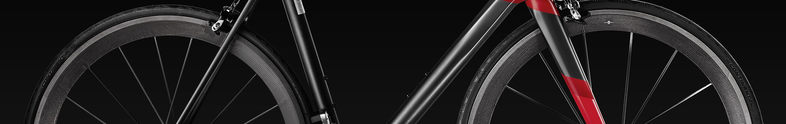
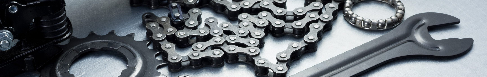

Стоимость услуг веломастерской

| Трансмиссия
|
| Демонтаж прикипевшей или сорванной педали |
от 500 р. |
| Установка и настройка переднего переключателя (с заменой) |
100-200 р. |
| Установка и настройка заднего переключателя (с заменой) |
100-200 р. |
| Установка системы на велосипеды с установленной кареткой |
100-150 р. |
| Установка звезд системы без демонтажа системы (с заменой) |
50-100 р. |
| Установка резьбовой каретки ( с заменой) |
от 100 р. |
| Установка манетки переключателя |
от 150 р. |
| Установка педалей |
50 р. |
| Установка цепи, установка замка цепи |
50-150 р. |
| Установка тросика переключения |
50 р. |
| Установка гидролинии или оболочки троса внутри рамы |
200-250 р. |
| Укорачивание троса или оболочки троса манетки переключения/ тормоза |
100 р. |
| Установка рокринга |
100 р. |
| Установка успокоителя цепи |
200-350 р. |
| Настройка трансмиссии |
от 150 р. |
| Настройка переднего переключателя |
50-150 р. |
| Настройка заднего переключателя |
50-150 р. |
| Чистка и смазка манетки |
от 100 р. |
| Правка кронштейна заднего переключателя (петуха) |
100-150 р. |
| Протяжка каретки с демонтажем системы |
150 р. |
| Смазка цепи без ее очистки |
Бесплатно! |
| Переборка каретки на насыпных подшипниках |
150-200 р. |
| Переборка каретки на промышленных подшипниках |
от 200 р. |
| Переборка педалей |
от 200 р. |
| Переборка манетки |
от 200 р. |
| Колёса
|
| Демонтаж и установка покрышки |
50-200 р. |
| Демонтаж и установка бескамерной покрышки |
100-150 р. |
| Сборка колеса с последующей протяжкой (спицовка) |
350 р. |
| Переспицовывание колеса (демонтаж и установка) |
350-450 р. |
| Установка переходников втулки |
от 50 р. |
| Переборка передней втулки (насыпные подшипники) |
100-200 р. |
| Переборка передней втулки (промышленные подшипники) |
150-250 р. |
| Переборка задней втулки (насыпные подшипники) |
200 р. |
| Переборка задней втулки (промышленные подшипники) |
200-300 р. |
| Переборка барабана (насыпные подшипники) |
от 200 р. |
| Переборка барабана (промышленные подшипники) |
от 250 р. |
| Регулировка конусов подшипников втулки |
от 100 р. |
| Корректировка зонта колеса |
от 100 р. |
| Исправление биения колеса протяжкой спиц (корректировка восьмерок или эллипса |
от 100 р. |
| Тормоза
|
| Установка и настройка тормоза v-brake или клещевого тормоза |
150-200 р. |
| Установка и настройка кантилеверного тормоза |
200-250 р. |
| Установка и настройка дискового механического тормоза |
150-250 р. |
| Установка ротора дискового тормоза |
от 100 р. |
| Настройка дискового тормоза, настройка тормоза v-brake или клещевого тормоза |
от 50 р. |
| Настройка кантилеверного тормоза |
от 50 р. |
| Укорачивание или замена гидролинии тормоза без прокачки |
от 100 р. |
| Полная переборка и смазка калипера гидравлического тормоза с прокачкой |
от 400 р. |
| Полная переборка и смазка ручки гидравлического тормоза с прокачкой |
от 400 р. |
| Прокачка гидравлического тормоза |
300-450 р. |
| Чистка и смазка калипера без его разборки и прокачки |
от 100 р. |
| Правка ротора |
50-150 р. |
| Протяжка ротора с креплением любого типа |
от 50 р. |
| Замена жидкости в гидравлическом тормозе (с прокачкой) |
300-450 р. |
| Замена (переустановка) колодок тормоза v-brake или клещевого тормоза |
от 100 р. |
| Замена (переустановка) колодок кантилеверного тормоза |
от 100 р. |
| Замена (переустановка) колодок дискового тормоза |
от 100 р. |
| Рулевая колонка
|
| Демонтаж опорных чашек рулевой колонки из рулевого стакана рамы |
от 100 р. |
| Демонтаж опорного кольца рулевой колонки с вилки |
от 50 р. |
| Установка опорных чашек рулевой колонки в рулевой стакан рамы |
150-250 р. |
| Установка опорного кольца рулевой колонки на вилку |
от 50 р. |
| Установка якоря в шток вилки |
от 50 р. |
| Установка рулевой колонки в сборе |
от 200 р. |
| Укорачивание штока вилки, установка якоря, установка опорного кольца рулевой колонки |
250-300 р. |
| Переборка рулевой колонки на открытых (насыпных) подшипниках |
от 150 р. |
| Переборка рулевой колонки на промышленных подшипниках |
от 150 р. |
| Регулировка рулевой колонки |
от 50 р. |
| Подвеска
|
| Вилка
|
| Демонтаж вилки |
от 50 р. |
| Установка вилки без выносной блокировки |
от 50 р. |
| Установка вилки с выносной блокировкой |
от 150 р. |
| Установка новой вилки |
от 300 р. |
| Настройка выносной блокировки вилки |
от 50 р. |
| Прокачка выносной гидравлической блокировки вилки |
200 р. |
| Техническое обслуживание новой вилки |
от 250 р. |
| Техническое обслуживание пружинной вилки |
от 250 р. |
| Техническое обслуживание воздушной вилки |
от 500 р. |
| Настройка вилки |
от 100 р. |
| Полная переборка вилки с демпфером Specialized Brain или Fox Terralogic |
от 800 р. |
| Замена или установка башингов |
150-450 р. |
| Замена оболочки/троса манетки выносной блокировки вилки |
от 100 р. |
| Задний амортизатор
|
| Демонтаж заднего амортизатора |
50-100 р. |
| Установка заднего амортизатора |
50-100 р. |
| Настройка выносной блокировки заднего амортизатора |
50-150 р. |
| Техническое обслуживание заднего амортизатора |
150-800 р. |
| Техническое обслуживание заднего амортизатора воздушного (а также Specialized Brain) |
от 500 р. |
| Замена рубашки/троса выносной манетки блокировки заднего амортизатора |
100 р. |
| Исправление деформаций металлических рам, вилок .и других компонетов
|
| Исправление деформаций вилки |
до 600 р. |
| Исправление деформаций других узловУстановка доп. Оборудования |
от 100 р. |
| Другое оборудование
|
| Извлечение прикипевшего подседельного штыря |
от 300 р. |
| Установка и настройка велокомпьютера |
50-150 р. |
| Установка крыльев колеса |
от 50 р. |
| Установка шипов на велосипедную обувь |
100-200 р. |
| Установка багажника |
от 100 р. |
| Установка "рогов" на руль |
Бесплатно! |
| Установка седла |
Бесплатно! |
| Замена (переустановка) руля |
100-250 р. |
| Комплексные работы
|
| Сборка велосипеда из коробки с собранными колесами |
300-900 р. |
| Сборка велосипеда из коробки с несобранными колесами |
от 900 р. |
| Протяжка всех резьбовых соединений велосипеда |
150-250 р. |
| Переброска оборудования с одной рамы на другую |
400-700 р. |
Комплексные работы по восстановлению велосипеда
(Очистка всех компонентов, полное ТО, разборка велосипеда,пескоструйная очистка, порошковая покраска, сборка велосипеда, мойка после ТО, наклейки и поклейка) |
от 2500 р. |
| Полная очистка всех узлов велосипеда |
300-500 р. |
| Полное ТО |
от 600 р. |
| Работы с металлом
|
| Укорачивание штока вилки (сталь/алюминий) |
150 р. |
| Укорачивание подседельного штыря (сталь/алюминий) |
150 р. |
| Укорачивание руля (сталь/алюминий) |
200 р. |
Если вы не нашли необходимую вам услугу - обратитесь к нам, скорее всего, она пропущена в перечне.
Доставка зависит от расстояния. до 5 км до 250 р., от 5-10 км - 250-350 р., от 10 км - от 300 р.

Нужно отремонтировать технику?
Оставьте заявку на диагностику